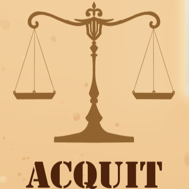

Open playthrough on Google Drive

A physical courtroom strategy game. Gather evidence, pick your defence, then use it to win over the jury. First to 12 jurors wins.
You play the defence in the O.J. Simpson trial. You gather evidence, commit to a theory of the case, then use that preparation to win arguments. The brief asked for an adventure, so the legal process itself is the journey. The prosecution is played by the trial deck, not a second player.
I was Design Lead. Every gameplay system and mechanic on the table is mine: investigation, discovery, evidence, motions, tactics, the card list, and the numbers behind them. I ran balance passes after playtests with the team. Art was done by the team. Research was mainly done by others; I helped a little. I contributed to the rulebook and the Figma card layout, but those were not my main job.
A courtroom fantasy fails if it becomes a dice game with legal flavour text. The dice decide each argument, but they are not the game. The game is whether the evidence you gathered in investigation and the motion you picked in pre-trial actually change your odds when a card flips. If a player who prepared carefully and a player who rolled with no cards feel the same, the earlier phases were pointless.
That is why the three phases are not three versions of the same loop. Investigation is about building your hand. Pre-trial is picking one rule change that lasts the whole trial. Trial is using that preparation against a deck that is stacked against you. Each phase asks a different question, and the answers build on each other instead of resetting.
A single shared deck was easier to set up, but cards kept showing up at the wrong time: an investigation tool during an argument, a motion after the trial had already begun. So I split the decks: one for investigation and pre-trial, and one with arguments and tactics for court.
Setup takes a little longer, but each phase is clear. I think that trade is worth it: a minute of sorting in exchange for a whole game where every card makes sense when it appears.
You build your hand. Draw a case, then use investigation cards to peek, search, redraw, or sort evidence from arguments. Extra cards are discarded at the end of the phase, so the skill is choosing what to keep, not hoarding.
Choosing the right cards matters more than drawing lots of them. A hand full of strong evidence that does not fit the arguments you will face is worse than a smaller hand where everything fits together. Investigation is where you decide which theory of the case you are actually going to argue.
In pre-trial you pick one motion, and each one has a real trade-off. It stays on the table for the whole trial: a lasting rule change, not a one-time effect.
| Motion | What it buys | What it costs |
|---|---|---|
| Suppress | Evidence lands harder when it hits | A failed evidence-backed argument hurts more |
| Dismiss | Your argument rolls improve | Taxed for every argument the other side still wins |
| Continuance | A redraw: safer hand, less swing | No permanent rules leverage into trial |
Suppress and Dismiss are bets that your preparation will hold up. Continuance admits that it will not. Making Continuance the weak option is deliberate: the safe pick should feel like opting out of motions, not like a free fourth option with no downside.
Flip an argument card; its base difficulty already favours one side. You can play evidence, a tactic, or both, then roll. Even with an empty hand you can still roll, so running out of cards makes things harder but never locks you out.
Evidence is not a generic +1. Some cards only fit specific arguments; some swing the jury harder but with worse odds. Combos reward building a consistent case instead of playing every strong card you have. Tactics can be played mid-trial: reroll, extra evidence, replay, cancel.
Jury tokens start undecided. First to 12 wins; if nobody reaches 12, it is a draw.
About 40 cards across the list:
| Type | Count | Phase |
|---|---|---|
| Arguments | 10 | Trial |
| Evidence | 15 | Trial |
| Tactics | 7 | Trial |
| Investigation | 5 | Investigation |
| Motions | 3 | Pre-trial |
The difficulty of each argument and the evidence bonuses had to hold up in playtests without any argument becoming an automatic win or a pure coin flip. The card list is the result.
Early scores swung hard: 5–7, then 10–2, 10–2. Players who prepared carefully still felt like the dice had decided the night. That is the failure mode the whole design was trying to avoid.
What I changed, and why:
The dice stayed. The scoring had to show players that the dice were not the whole game.
Card list
Rulebook
Print and play
Game design notes
Presentation deck
Also physical Conquest · a solo hex strategy game where I was also Design Lead. Instead of evidence and a jury, the pressure comes from a time limit and an assassin.
Questions soniclinxin@gmail.com · LinkedIn